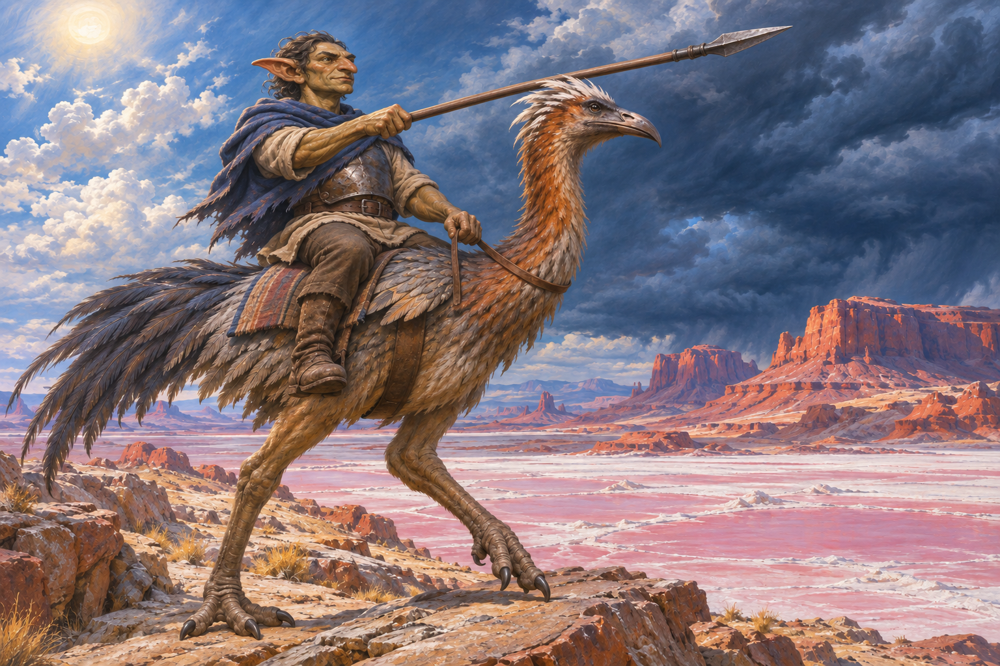
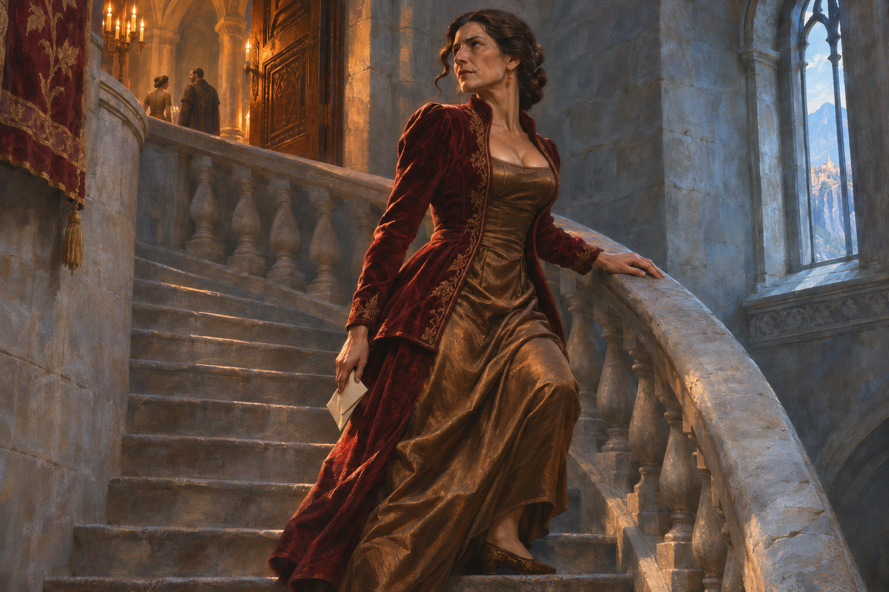

Stormglass Glaive
Liked; approved equipment reference.

The Glasswind Rider
Revise this rider into a somewhat larger, stronger male goblin, still clearly goblin-like rather than orc-like. Point the spear forward. The completed revision awaits creator review.

The Rootbound Quarter
The new wooden village is very good; approved.

Something Beneath the Abbey
The immense creature is too large for this shoreline encounter. A creature of this scale might belong far out in the ocean as something possibly true but unconfirmed. Reject this depiction; preserve the tentative idea in writing.
The Ivory-Mantle Envoy
The lion-folk concept is strongly liked; approved.

The Garden That Still Opens
Liked; its appealing, somewhat impractical use of magic is a positive direction. Approved.

The Velvet Stair
The court-intrigue scene is liked. Keep the long dress and apply a more restrained version of the existing fuller-bust/neckline direction. The completed revision awaits creator review.

The Rain That Rises
Strongly liked: very cool. Approved.